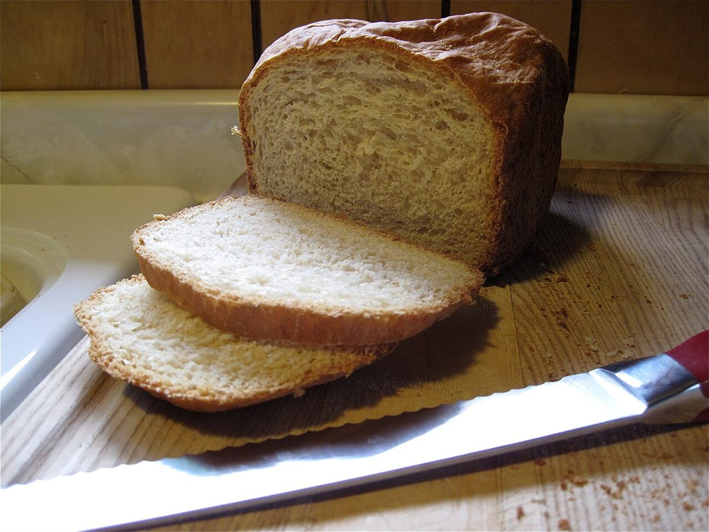

MENU
メニュー
メニューと価格は準備中です。決まりしだい、こちらに載せます。





写真はパンのイメージです。お店のものではありません。
ZOOM
5と6の拡大
網目の打面(5)と、それを囲む縁(6)だけを大きく描いた図です。メニューの内容とは関係のない、制作側のイラストです。
MENU
メニューと価格は準備中です。決まりしだい、こちらに載せます。

写真はパンのイメージです。お店のものではありません。
ZOOM
網目の打面(5)と、それを囲む縁(6)だけを大きく描いた図です。メニューの内容とは関係のない、制作側のイラストです。